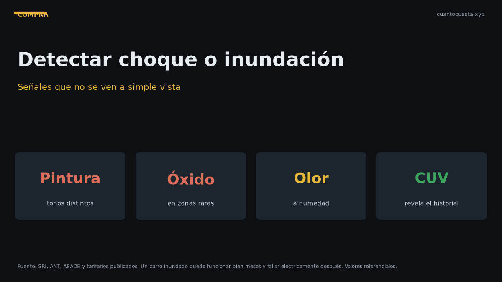

Cómo detectar un carro chocado o inundado en Ecuador
Señales de pintura repintada, óxido en zonas raras, olor a humedad y tornillería marcada: cómo detectar un carro chocado o inundado antes de comprarlo.

Un carro chocado o inundado se detecta con tres sentidos y una linterna: la vista (tonos de pintura, espaciados, óxido), el olfato (humedad) y el tacto (tornillería, superficies). Ninguna señal es concluyente por separado; la suma de varias es lo que delata el daño.
El daño por agua es el más difícil de ver y el más caro, porque aparece meses después en la electrónica. El choque mal reparado se ve, si sabes dónde mirar.
Señales de un carro chocado
Pintura y tonos
- Diferencias de tono entre paneles: mira el auto a plena luz del sol, nunca bajo techo ni de noche.
- Pintura sobre bordes y sobre empaques: una reparación rápida deja pintura donde no debería haber.
- Pulido excesivo en un solo panel mientras el resto está opaco: alguien quiso disimular.
- Cáscaras, goterones o textura de cáscara de naranja en el marco de puertas y en los cantos.
- Masilla detectable: pasa la uña o un paño por el borde de los paneles; una zona con textura distinta delata relleno.
Espaciados y ajustes
- Holguras desiguales entre capó, guardafangos y faros.
- Puertas que cierran forzadas o que sobresalen de la línea de carrocería.
- Parabrisas con sellado nuevo o silicona visible en el marco.
- Faros nuevos de un solo lado: el otro quedó original y se nota la diferencia de desgaste.
Tornillería y soldaduras
- Tornillos con marcas de llave, sobre todo en guardafangos, capó y tapa del maletero.
- Pintura sobre la rosca de tornillos: señal clásica de repintado hecho con el panel puesto.
- Soldadura irregular o no original en el vano del motor, el marco del parabrisas y el piso.
- Arrugas en largueros y puntas de chasis: la señal más grave de un choque estructural.
| Zona | Qué buscar | Señal de alarma |
|---|---|---|
| Guardafangos y capó | Tornillos y empaques | Marcas de llave, pintura sobre rosca |
| Puertas | Espaciados y sellos | Holgura desigual, cierre forzado |
| Parabrisas | Sello | Silicona nueva, burbujas |
| Vano del motor | Soldaduras | Cordón irregular, pintura tapando |
| Chasis y largueros | Deformación | Arrugas, golpes, refuerzos añadidos |
| Piso y umbrales | Repintado | Masilla, textura distinta |
Señales de un carro inundado
El agua deja rastro químico y orgánico: óxido, olor y sedimento.
- Olor a humedad o a encerado en la cabina, sobre todo al encender el aire acondicionado.
- Óxido en zonas raras: rieles de los asientos, tornillos de anclaje, resortes bajo el asiento, soportes del tablero.
- Manchas de agua y bordes ondulados en tapicería, techo y alfombra.
- Neblineros y faros empañados de forma permanente.
- Sedimento o barro en rincones del motor, en la fusiblera y en los conectores.
- Sulfato blanquecino en terminales y conectores eléctricos.
- Tornillos del piso oxidados con la cabeza limpia: alguien los secó y los limpió.
- Cinturones de seguridad rígidos, con olor y con marcas de agua hasta cierta altura.
Las inundaciones en Ecuador no siempre vienen de un río: un auto que quedó sumergido en un paso a desnivel durante un aguacero tiene el mismo problema electrónico que uno venido de la costa. Pregunta por la procedencia y por siniestros, y contrasta con lo que ves.
Cómo usar el CUV y el historial
El Certificado Único Vehicular (CUV, $7,50) y la consulta de la placa te dan datos duros que el ojo no puede inventar:
- Consulta la placa para ver datos del vehículo, multas y gravámenes.
- Compara el número de motor y chasis del documento con el grabado físico en el auto. Una diferencia ahí es la señal más grave de todo el chequeo.
- Revisa si hubo cambio de características declarado (motor, color, carrocería): un cambio legítimo queda registrado; una modificación no declarada es alerta.
- Pide el historial de mantenimiento y compáralo con el kilometraje.
- Cruza el desgaste real (pedal, palanca, volante, asiento) con los kilómetros del odómetro.
Un auto con historial documentado y datos que coinciden es mucho menos riesgoso que uno "perfecto" sin papeles.
Qué preguntar al vendedor
- ¿El auto ha tenido choques? ¿Cuáles y cuándo?
- ¿Alguna vez se inundó o estuvo en zona de inundación?
- ¿Por qué lo vende ahora?
- ¿Cuántos dueños ha tenido? Pide ver las matrículas anteriores.
- ¿Tiene historial de servicios? ¿Dónde los hizo?
- ¿El motor es original? Pide factura si lo cambiaron.
- ¿Acepta una revisión en taller de mi elección?
Un vendedor honesto no se ofende con estas preguntas. Uno que se pone nervioso o esquiva la de la revisión independiente es una señal en sí misma.
Cómo interpretar las respuestas
| Respuesta del vendedor | Cómo leerla |
|---|---|
| "Nunca chocó" y acepta taller | Coherente: buena señal |
| "Nunca chocó" y evita el taller | Señal de alerta |
| "Tuvo un raspón chiquito" con fotos | Aceptable si la reparación es menor y visible |
| "No sé, era de mi papá" | Necesitas historial o revisión a fondo |
| "Está a nombre de mi cuñado" | Verifica poder, propietario real y gravamen |
Las respuestas esquivas no cierran una compra por sí solas, pero cambian el nivel de escrutinio que le pongas al chequeo físico. Si las palabras y el auto no coinciden, pesa más el auto.
Herramientas simples que ayudan
- Imán con un paño: no se pega donde hay mucha masilla.
- Linterna: indispensable para el vano del motor, el piso y los rieles de los asientos.
- Medidor de espesor de pintura: si tienes acceso, detecta repintados de forma objetiva.
- Trapo blanco: pasa por rieles y rincones; si sale con óxido o barro, mira más a fondo.
- Tu nariz: el olor a humedad no se disimula del todo, ni con ambientador.
Resumen práctico
- Choque: diferencias de tono, espaciados irregulares, tornillería marcada, soldadura no original, chasis arrugado.
- Inundación: olor a humedad, óxido en zonas raras, sedimento en el motor, sulfato en conectores.
- Usa el CUV y la consulta de placa para comparar motor y chasis con el documento.
- Pregunta de frente por choques, inundación, dueños y motor, y exige revisión en tu taller.
- Mira el auto de día y a plena luz: nunca de noche ni bajo techo.
- Ante tres o más señales juntas, aléjate: el precio no compensa el riesgo.
Los requisitos y costos de consulta son referenciales y pueden cambiar. Confirma el valor del CUV y de las consultas en las entidades correspondientes, y haz siempre una revisión mecánica independiente antes de cerrar el trato.
Sigue leyendo
Cuántos kilómetros dura un motor en Ecuador y cómo alargar su vida útil
Un motor bien mantenido dura 200.000-300.000 km. Cómo afectan la altura de la sierra y el tráfi
Precio justo de un carro usado en Ecuador: cómo calcularlo antes de negociar
Método de depreciación anual, uso del avalúo del SRI y señales de estafa para calcular y negoci
Qué revisar antes de comprar un carro usado en Ecuador (checklist completo)
Checklist mecánico, documentos y pruebas para revisar un carro usado en Ecuador antes de pagar:
Transferencia de dominio en Ecuador: pasos, tiempos y errores comunes
Transferencia de dominio en Ecuador: tiempos reales, por qué se cae el trámite (multas, gravame
Cómo verificar que un carro usado no tenga gravámenes ni multas en Ecuador
Cómo consultar gravámenes, reserva de dominio y multas de un carro usado en Ecuador antes de co
Cómo usamos estos datos
Las cifras de esta guía provienen de fuentes públicas oficiales y tarifarios de concesionarios publicados. Los valores son referenciales: tasas municipales, promociones y precios de repuestos varían. Verifica siempre en la entidad o concesionario antes de decidir.